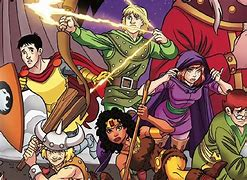
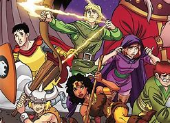

Qui troverai tutto ciò che ti serve per immergerti nell’universo del gioco di ruolo che ami. Che tu sia un veterano esperto o un nuovo giocatore, abbiamo creato una risorsa completa per supportarti in ogni fase del gioco.
- Crea il Tuo Personaggio: Con le nostre guide intuitive, potrai progettare il tuo personaggio giocante ideale passo dopo passo. Ti accompagneremo nella scelta delle caratteristiche, abilità e background che meglio si adattano alla tua visione e al tuo stile di gioco.
- Esplora il Mondo del Gioco: Il nostro database completo ti permetterà di scoprire dettagli preziosi su ogni aspetto del gioco, dalle razze alle classi, dalle abilità speciali agli oggetti magici. Sia che tu stia cercando di ottimizzare il tuo personaggio, sia che tu voglia semplicemente esplorare nuove opzioni, siamo qui per aiutarti.
- Guida Completa alle Magie: Consulta la nostra sezione dedicata alle magie, dove potrai approfondire ogni incantesimo disponibile. Troverai spiegazioni dettagliate, suggerimenti tattici e informazioni cruciali per sfruttare al meglio le tue capacità magiche in gioco.
- Scopri le Razze e le Classi: Ogni personaggio è unico, e la scelta della razza e della classe è fondamentale per creare un eroe (o antieroe) che rispecchi il tuo stile. Abbiamo raccolto tutte le informazioni che ti servono per fare scelte informate e bilanciare il tuo personaggio.
- Risorse e Guide Avanzate: Non importa quale sia il livello di esperienza, troverai risorse pensate per ogni giocatore, da chi sta appena iniziando a chi desidera padroneggiare le meccaniche più complesse del gioco. Troverai anche guide sulle migliori strategie e tattiche per trionfare nelle sfide più ardue.